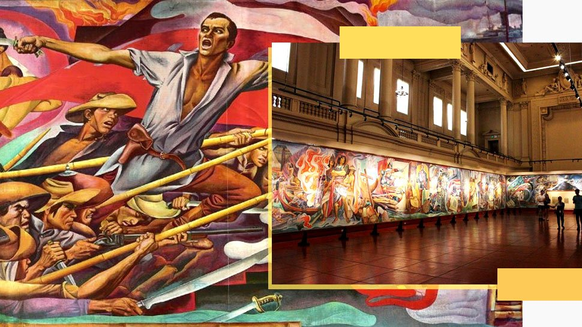
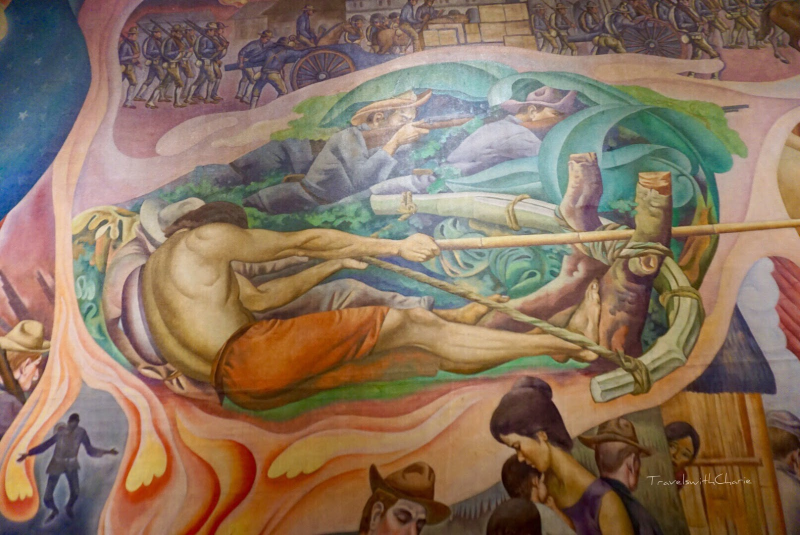
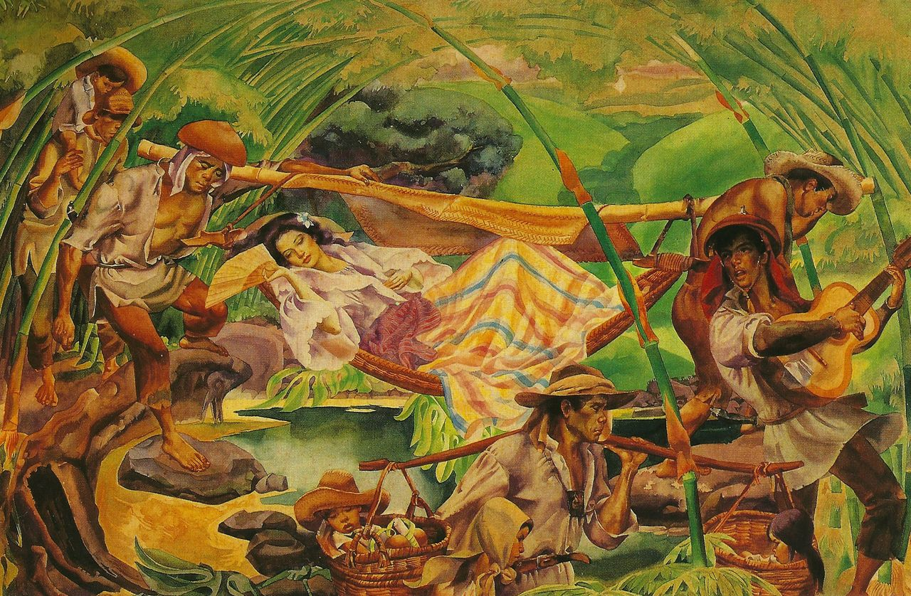
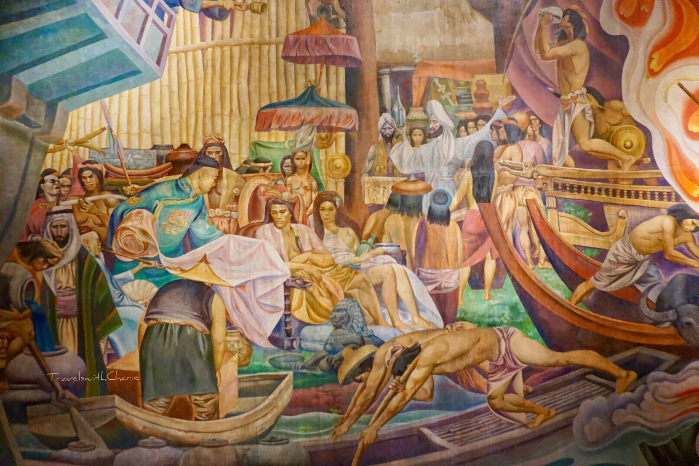

Best for: History Buffs, Muralists, and Heritage Travelers.
Vibe: Nostalgic, Historic, and Inspiring.


Botong Francisco Ancestral House & Mural Street
A Journey Through the Home and Streets of a National Artist.
To visit the Botong Francisco Ancestral House is to walk in the footsteps of a giant. Carlos "Botong" Francisco revived the art of murals in the Philippines, and his home remains a shrine to his genius, filled with the tools he used to create his historical epics.


